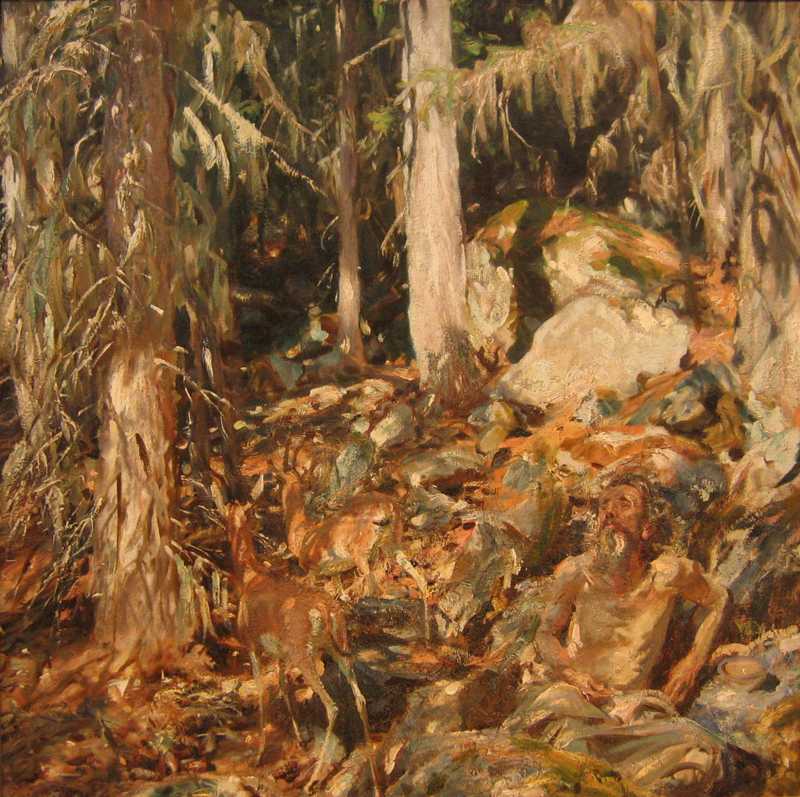
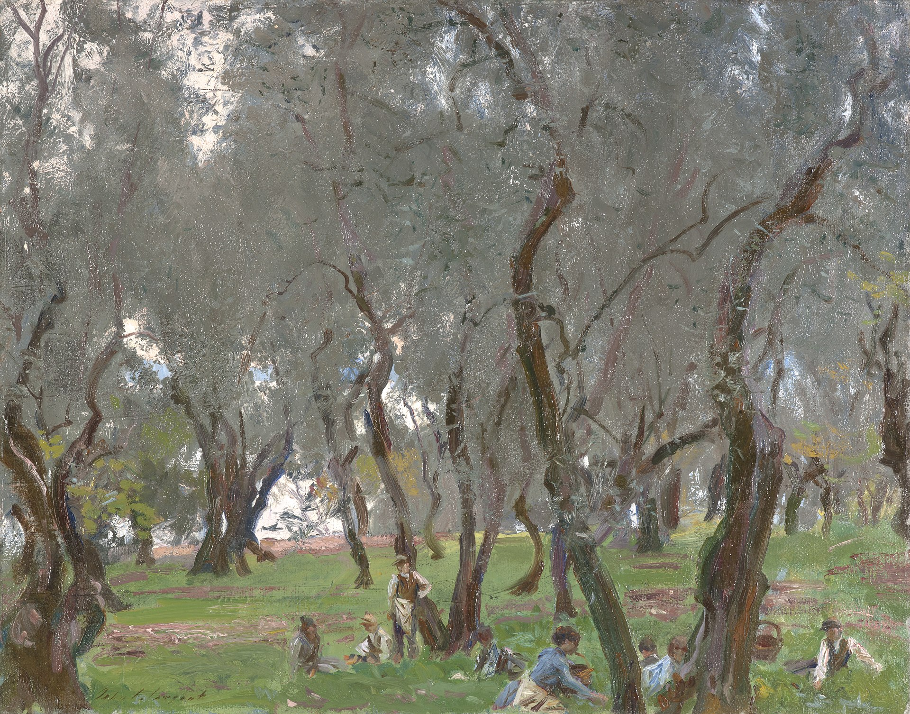
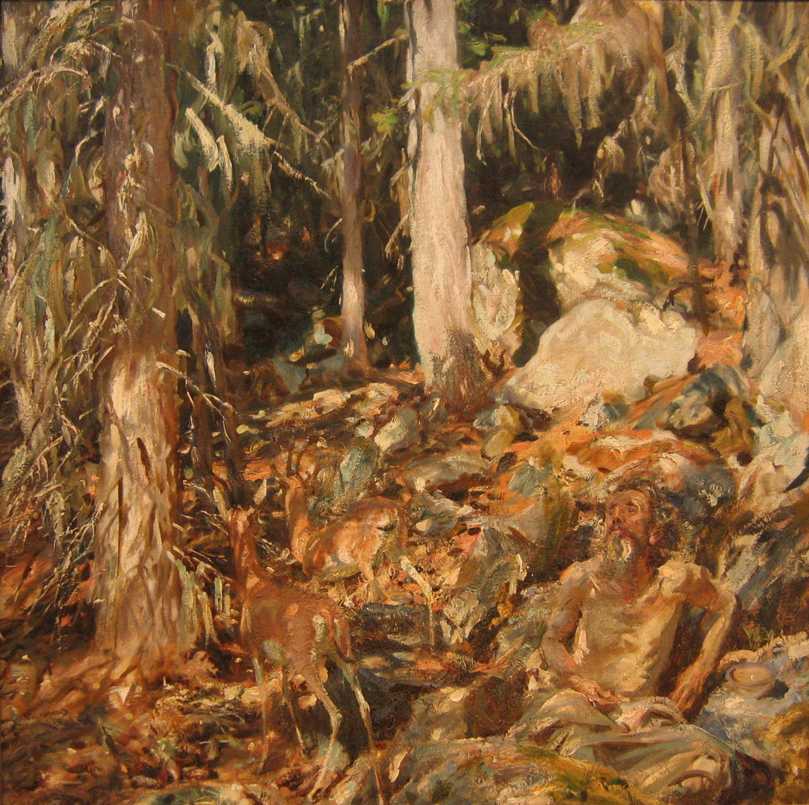
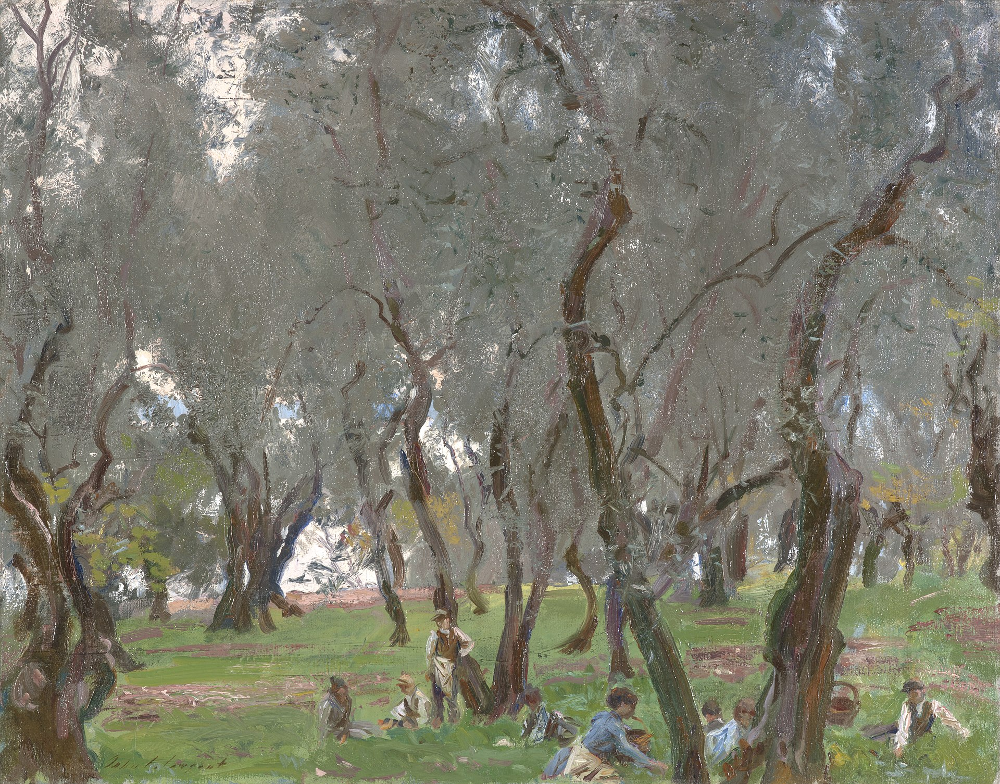

Why does this website exist?
Well, Daniel just really likes cool artwork. Does that warrant creating an entire website just for it? We aren't really sure... In any case, we have selected three of Daniel's most favorite artists to showcase to you all. As an artist himself, Daniel has been inspired many times in his own drawings by these artists' works. We hope that you will enjoy these artists as much as Daniel does. Happy painting!
John Singer Sargent
Sargent was an American painter who was widely considered to be the leading portrait painter of his time.

Claude Monet
Claude Monet was a French painter and the founder of impressionist painting. He believed in expressing one's perceptions before nature.
J. M. W. Turner
Turner was an English Romantic Painter. He was known for his expressive colouring and turbulent, often violent marine paintings.